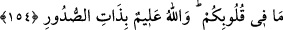

sabırdır. Kisvesi şükürdür. Yardımcısı Kur’ân-ı Kerîm’dir. İlmi hikmettir.
Temizlenmesini sağlayan hasleti, tevekküldür. İdeali fakirliktir. Bineği takvâdır. Daima
gurbette imiş gibi yaşar. Dostu hüzündür. Meclis arkadaşı zikirdir. Yoldaşı ise Allah
Teâlâ’dır.”
Zikr-i Hak’tır, Allah dostlarının ruhlarının gıdası,
Hakk’a şükürdür onların mesleği ve kazancı.
Eğer Allah’ın sırlarından haberdâr isen,
Ey Hakkı! Zikir ve tâat yolunda yürü.
154. Sonra o kederin arkasından Allah size bir güven indirdi ki, (bu güvenin yol
açtığı) uyuklama hâli bir kısmınızı kaplıyordu. Kendi canlarının kaygısına düşmüş
bir gurup da, Allah’a karşı haksız yere cahiliye devrindekine benzer düşüncelere
kapılıyorlar, “Bu işten bize ne!” diyorlardı. De ki: İş (zafer, yardım, her şeyin karar
ve buyruğu) tamamen Allah’a âittir. Onlar, sana açıklayamadıklarını içlerinde
gizliyorlar. “Bu işten bize bir şey olsaydı, burada öldürülmezdik” diyorlar. Şöyle
de: Evlerinizde kalmış olsaydınız bile, öldürülmesi takdîr edilmiş olanlar, öldürülüp
düşecekleri yerlere kendilerinden çıkıp giderlerdi. Allah, içinizdekileri yoklamak
ve kalplerinizdekileri temizlemek için (böyle yaptı). Allah içinizde ne varsa hepsini
bilir.
Ey mü’minler! “Sonra o üzüntünün ardından Allah size bir güven” verdi. Bir
kısmınızı, yani muhâcirlerle ensârın büyük bir bölümünü saran bir uyku indirdi.
Uykunun sadece bu kişilere indirilmiş olması, “indirme fiili”nin bütün müslümanlara
şâmil olması açısından bir sakınca doğurmaz. “Bir uyku” kelimesi güvenden bedel olup
uyuklama demektir. “İndirdi” anlamındaki (
) fiili, mecâzî bir anlam taşımaktadır:
“Ey inananlar size verdi, hibe tarzında ihsân etti.” demektir.
Ebû Talha (r.a.) şöyle diyor: “Uhud günü, başımı şöyle bir kaldırdım ve başlarına